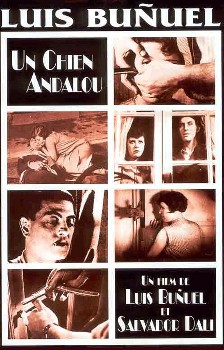

Luis Buñuel
1929
21 minutes
TITLE: Un Chien Andalou TEXT PLACEHOLDER 014
Like the cartoon series "King of the Hill", this film is strongly associated in your memories with Montreal, and for you the cartoon and the film are inextricably linked.
"King of the Hill" reminds you of being buzzed on warmed-up sake at Les Foufounes Electriques while watching Hank and Bobby Hill on a small TV at the bar while everyone around you had drunken conversations in barely-comprehensible Quebecois French, then later dancing in a sake haze to electroclash music. Propane and propane accessories always bring memories of the taste of warm sake to the back of your tongue.
Un Chien Andalou on the other hand reminds you of a different place whose name you don't recall, possibly long gone. You recall walking down the street with a mild buzz and being approached by one of the many, many shills in the city. The shill pressed a ticket for a FREE SHOW with a complimentary ticket good for two drinks for the opening of some new dance club. They were papering the house and trying to get a good crowd going before the late night dancing started.
The show ended up being a Doors cover band called "The Back Doors", who were doing their best to recreate the energy of their early shows. They had lava lamp gel projections and this particular film playing in the background. You bopped your head along to the music by the Doors, even singing along quietly a bit. You'd certainly been a fan of them in your teens before broadening your horizons. There's no shame in being a Doors fan, only shame in never going beyond them--and they certainly spurred on an interest in poetry and opened you up to Kurt Weill and Aldous Huxley and Luis Bunuel. It was this film that really captured your attention this night. It wasn't something you could just go out and rent or view in any comfortable way. You only new of the notorious imagery through second-hand sources. And there it was for you on a screen behind a band playing beloved music from your teens while you stood sipping a free beer while surrounded by some of the most beautiful women you had ever seen in your life...
Both nights ended the same way, of course, with you proceeding back along rue Sainte Catherine very late at night with a pretty healthy buzz and getting cat-called by all the hookers hanging out in front of the donut shop.
You never came back to Un Chien Andalou for a proper rewatch--until now. Watching this on a laptop in the coffee shop doesn't quite compare, but at least you can finally devote your undivided attention to it after all these years.
Time to choose something different: